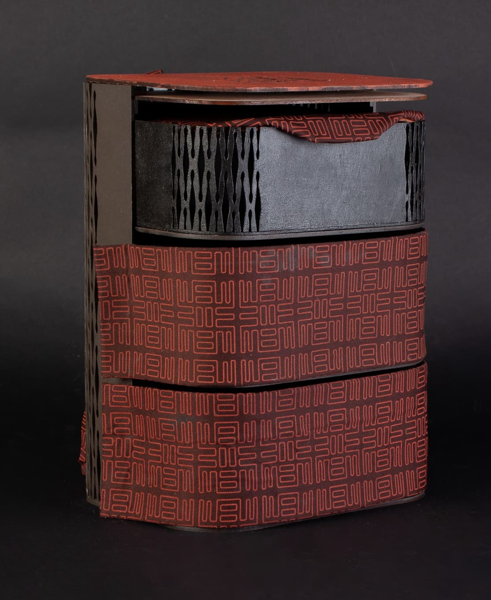
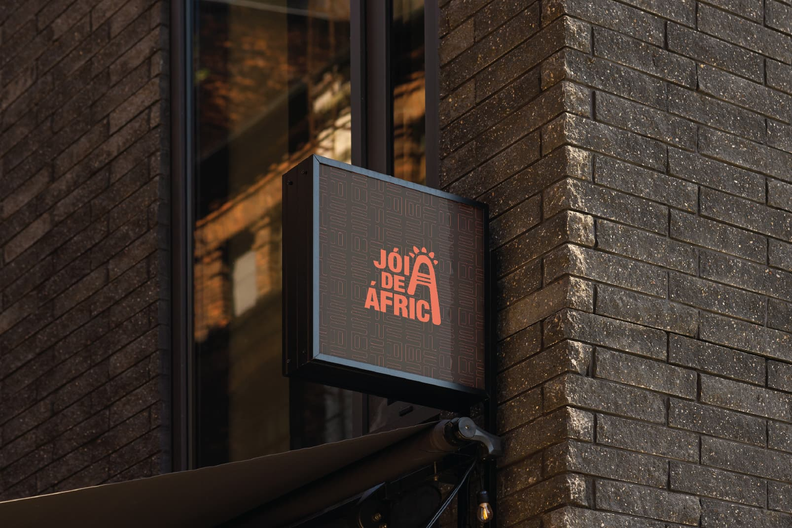
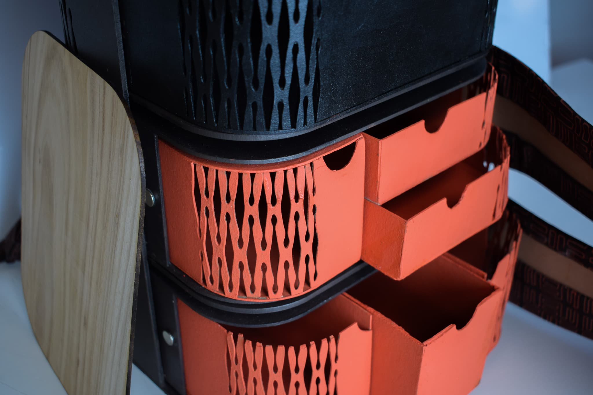
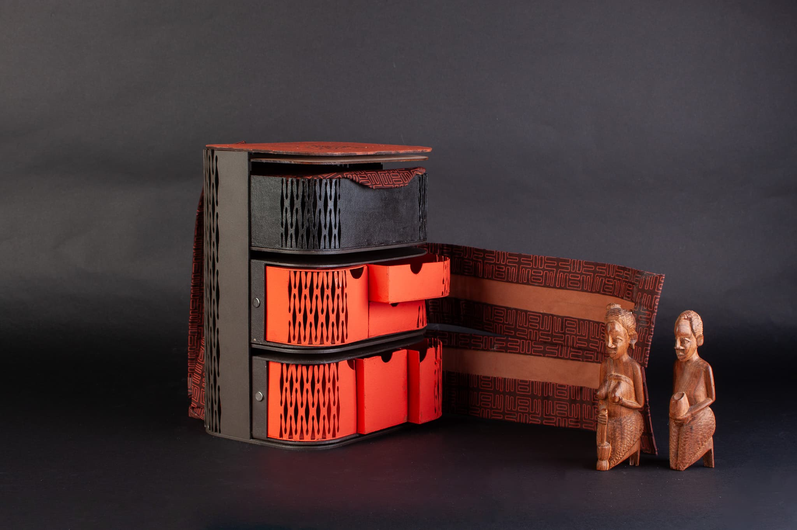
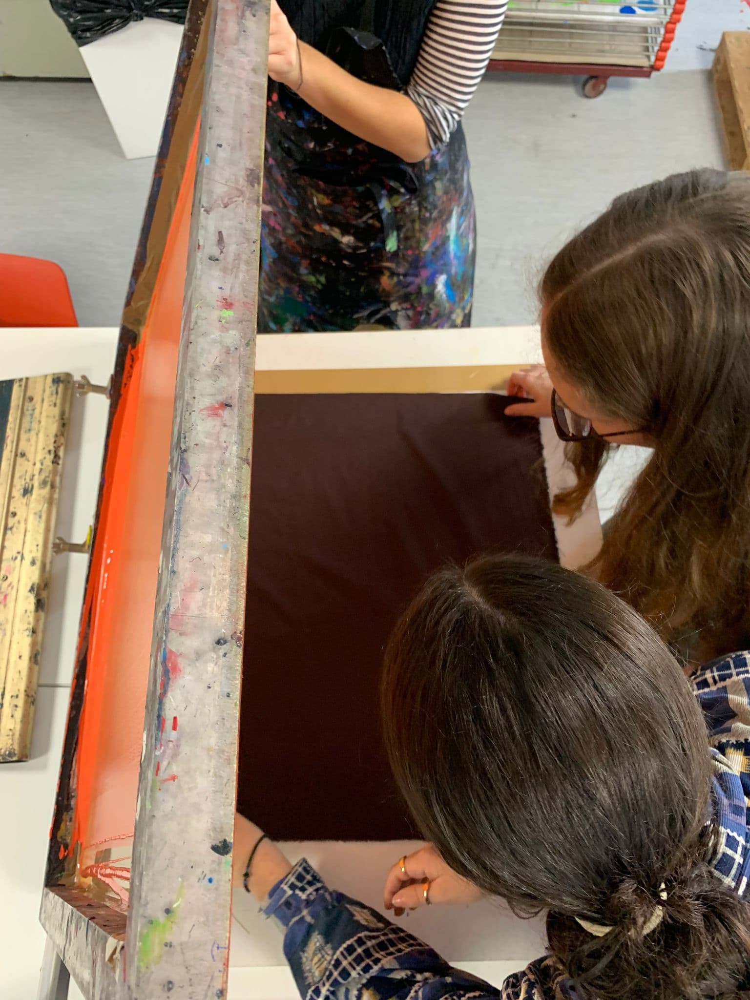
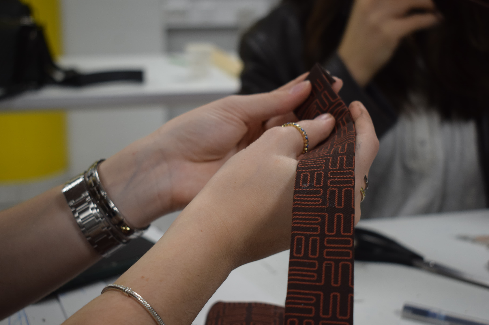
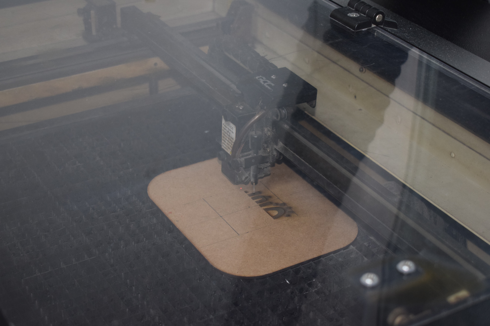
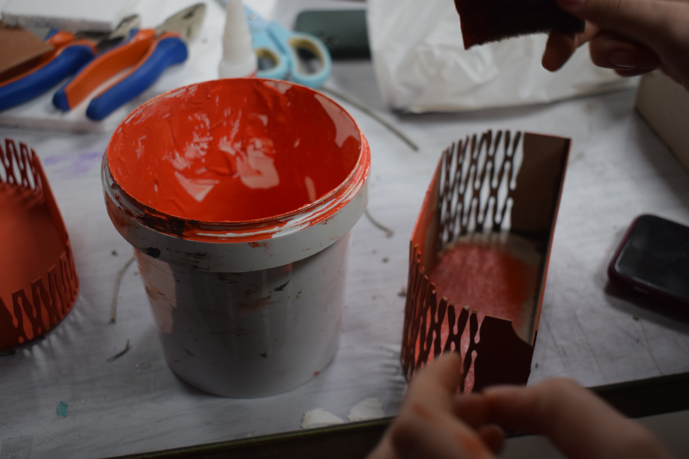
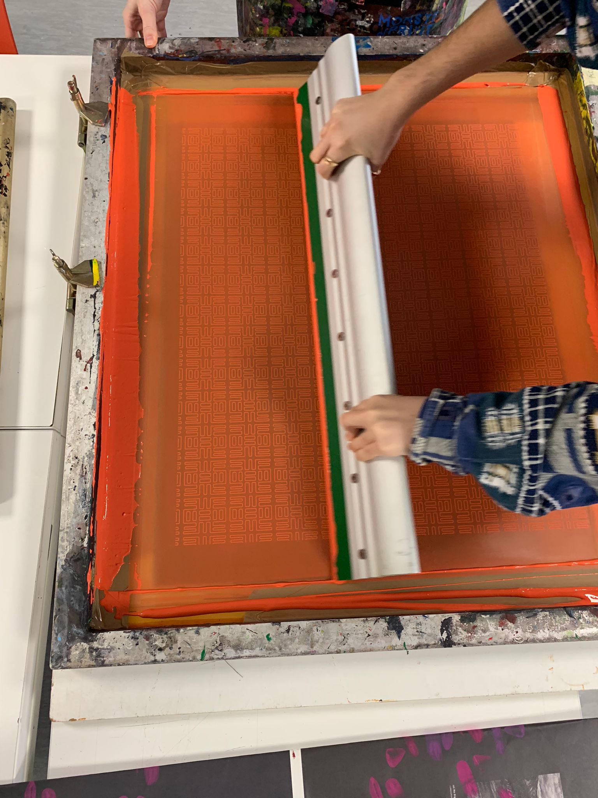

Adobe Illustrator
Adobe InDesign
Blender
Rhino3D

The Project (2023)
In this project, we partnered with the Aga Khan Foundation to support the growth of small businesses by rebranding and enhancing their market presence. Our team worked with Jóia de África, a vibrant African restaurant located in Lisbon, with the mission of elevating its brand identity and expanding its business potential. We developed a comprehensive brand book that established cohesive guidelines, covering everything from logo and color schemes to typography and visual tone. This rebranding aimed to better communicate the essence of Jóia de África, a place that celebrates African cuisine and culture with authenticity and warmth, while enhancing its appeal to a broader audience.
The Logo
For our logo, we made the letter "A" the focal point, symbolizing the heart of Jóia de África's African heritage. The stylized "A" with a sunburst design represents warmth and hospitality, key elements of the restaurant's identity. This bold, playful element draws attention, making the logo both memorable and expressive of the vibrant culture behind the brand. The warm, earthy colors and geometric patterns further connect the logo to African art, while also giving it a modern, welcoming feel that reflects the spirit of the restaurant.


To take the business a step further, we designed a portable working station in the form of a custom backpack. This unique solution enables the restaurant's owner and chef to expand her services as a private chef, offering personalized dining experiences directly in clients' homes or at special events. The backpack concept was designed for convenience, allowing the chef to transport essential cooking tools and ingredients easily, while reinforcing the restaurant's distinctive branding. This portable solution not only aligns with Jóia de África's identity but also opens up new revenue streams, enabling the business to reach new clients and create memorable dining experiences beyond the restaurant itself.
The Bag
For the working station, we designed a functional bag with three removable drawers, each offering different types of storage, such as compartments for spices. We built a high-fidelity prototype at a 1:2 scale, using laser-cut MDF and cardboard for the structure. To bend the wood on the corners, we applied a custom cutting pattern, allowing the material to curve smoothly. The fabric was painted with our custom pattern using the silk screen technique, and the entire bag was hand-painted with acrylics, giving it a unique, handcrafted finish. This portable station allows the chef to bring essential tools and ingredients wherever needed, making it practical and visually aligned with the Jóia de África brand.





